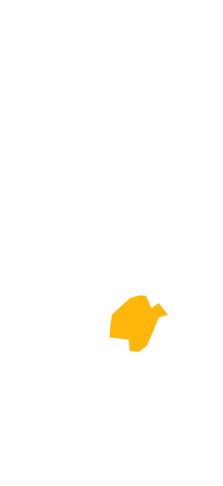
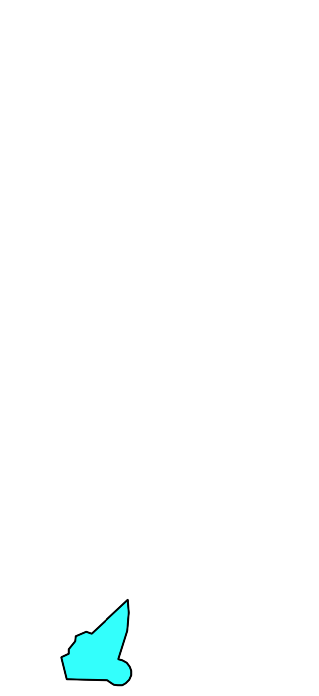
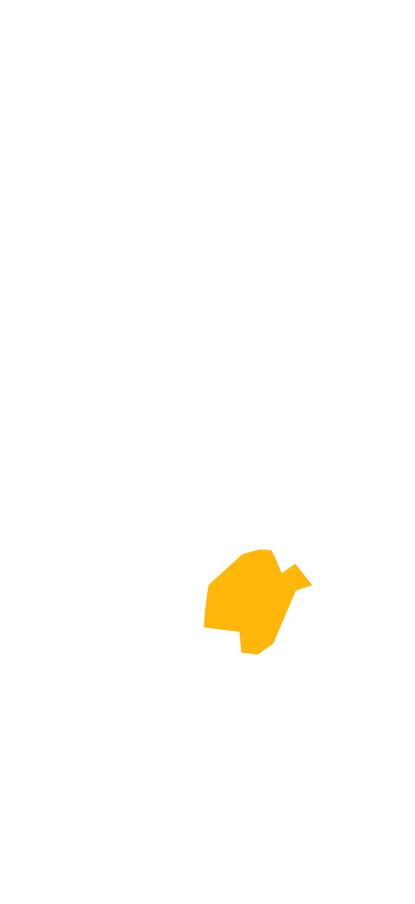
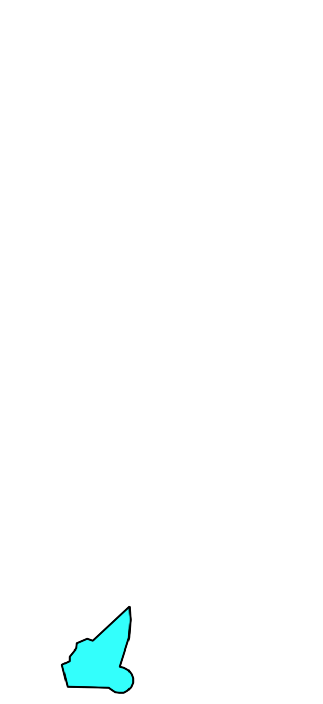
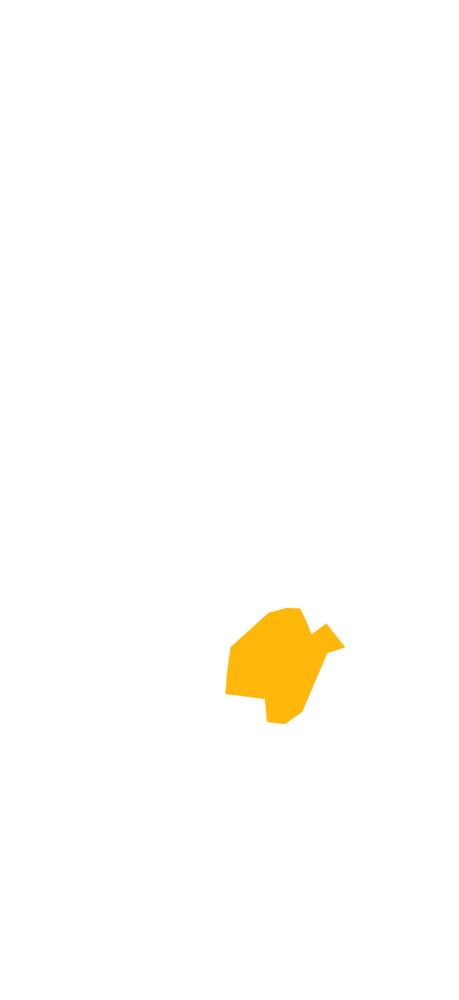
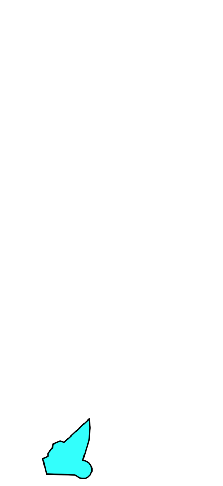
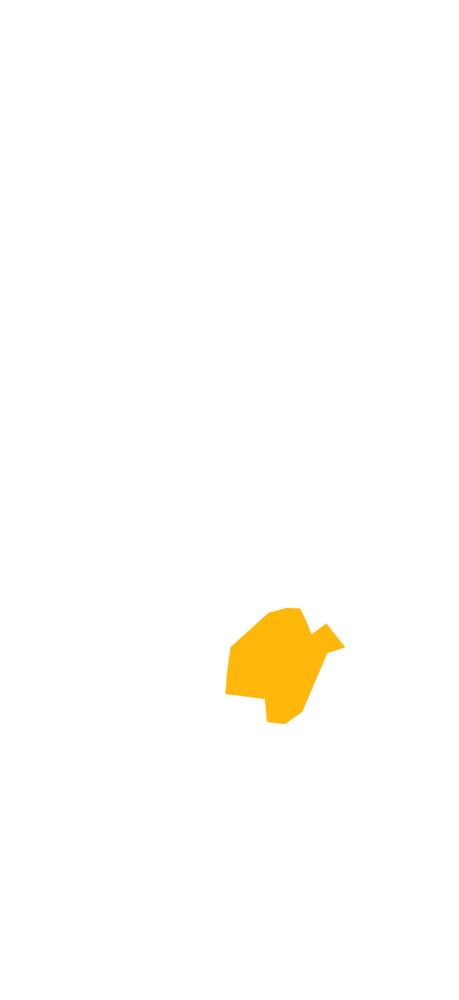
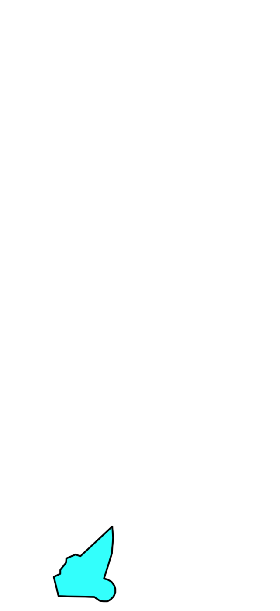

 



ESOS: All ADs in ESOS AoR, except those in OS TMA.
ESMM: All ADs in ESMM AoR, except those in GG TMA.
MM L: All ADs in MM L is included in ESMM.
ÖKC: All ADs in ÖKC is included in ESOS.
ESSA & ESCM not included.
* Only main RWY shown
** Other factors affect RWY in use (hover over to see)
Loading...